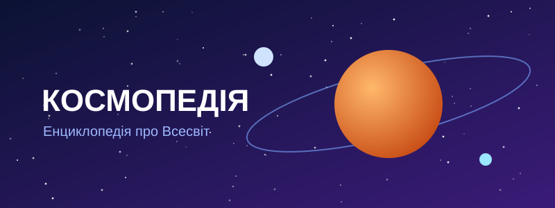

Про енциклопедію
«Космопедія» — безкоштовна онлайн-енциклопедія, яка просто розповідає про Всесвіт і створена для кожного, хто любить космос. Матеріали готують українські науковці та популяризатори науки.
Мета створення
Зібрати в одному місці перевірені, зрозумілі й цікаві статті про планети та космічні місії, щоб знання про Всесвіт були доступними школярам, студентам і всім небайдужим.
Завдання для досягнення мети
- Описати всі планети Сонячної системи простою мовою.
- Розповісти про найвизначніші космічні місії та телескопи.
- Підтримувати статті в актуальному стані за даними наукових джерел.
- Залучати до написання статей науковців і студентів-астрономів.
Перегляньте розділ про планети або дізнайтеся більше про авторів.